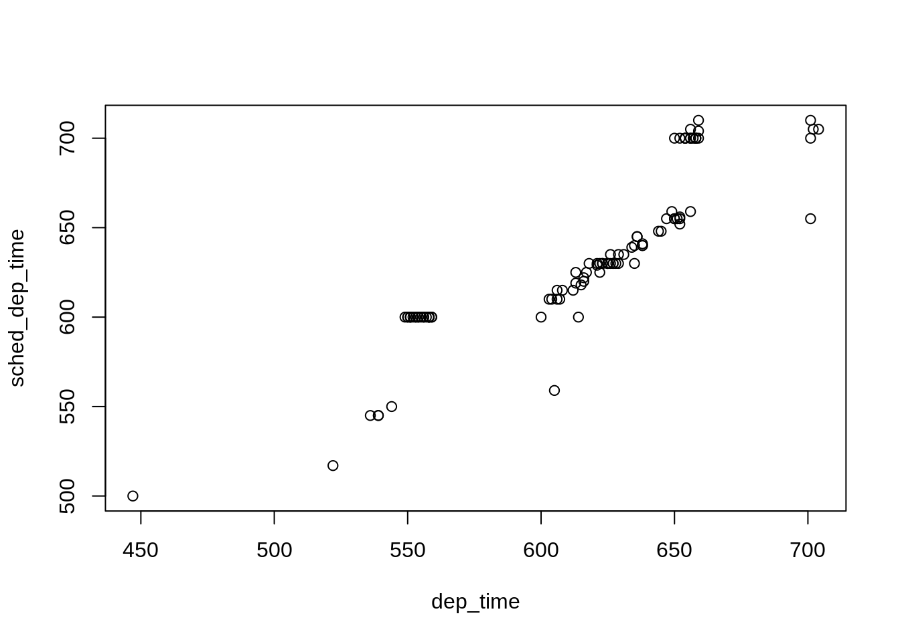

2.10 October flights
Summary statistics for October

## year month day dep_time sched_dep_time
## Min. :2013 Min. :10 Min. : 1.00 Min. : 6 Min. : 500
## 1st Qu.:2013 1st Qu.:10 1st Qu.: 8.00 1st Qu.: 905 1st Qu.: 900
## Median :2013 Median :10 Median :16.00 Median :1353 Median :1355
## Mean :2013 Mean :10 Mean :15.98 Mean :1340 Mean :1336
## 3rd Qu.:2013 3rd Qu.:10 3rd Qu.:24.00 3rd Qu.:1732 3rd Qu.:1723
## Max. :2013 Max. :10 Max. :31.00 Max. :2400 Max. :2359
## NA's :1416
## dep_delay arr_time sched_arr_time arr_delay
## Min. :-25.000 Min. : 1 Min. : 1 Min. :-61.0000
## 1st Qu.: -6.000 1st Qu.:1111 1st Qu.:1124 1st Qu.:-18.0000
## Median : -3.000 Median :1544 Median :1555 Median : -7.0000
## Mean : 6.244 Mean :1520 Mean :1539 Mean : -0.1671
## 3rd Qu.: 4.000 3rd Qu.:1938 3rd Qu.:1944 3rd Qu.: 7.0000
## Max. :702.000 Max. :2400 Max. :2359 Max. :688.0000
## NA's :1416 NA's :1482 NA's :1626
## carrier flight tailnum origin
## Length:173334 Min. : 1 Length:173334 Length:173334
## Class :character 1st Qu.: 507 Class :character Class :character
## Mode :character Median :1576 Mode :character Mode :character
## Mean :2008
## 3rd Qu.:3461
## Max. :6181
##
## dest air_time distance hour
## Length:173334 Min. : 23.0 Min. : 94 Min. : 5.0
## Class :character 1st Qu.: 81.0 1st Qu.: 502 1st Qu.: 9.0
## Mode :character Median :124.0 Median : 812 Median :13.0
## Mean :148.9 Mean :1039 Mean :13.1
## 3rd Qu.:191.0 3rd Qu.:1389 3rd Qu.:17.0
## Max. :642.0 Max. :4983 Max. :23.0
## NA's :1626
## minute time_hour
## Min. : 0.00 Min. :2013-10-01 05:00:00
## 1st Qu.: 8.00 1st Qu.:2013-10-08 17:00:00
## Median :29.00 Median :2013-10-16 13:00:00
## Mean :26.42 Mean :2013-10-16 12:29:57
## 3rd Qu.:45.00 3rd Qu.:2013-10-24 08:00:00
## Max. :59.00 Max. :2013-10-31 23:00:00
##